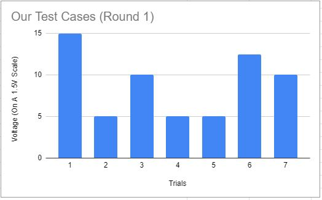
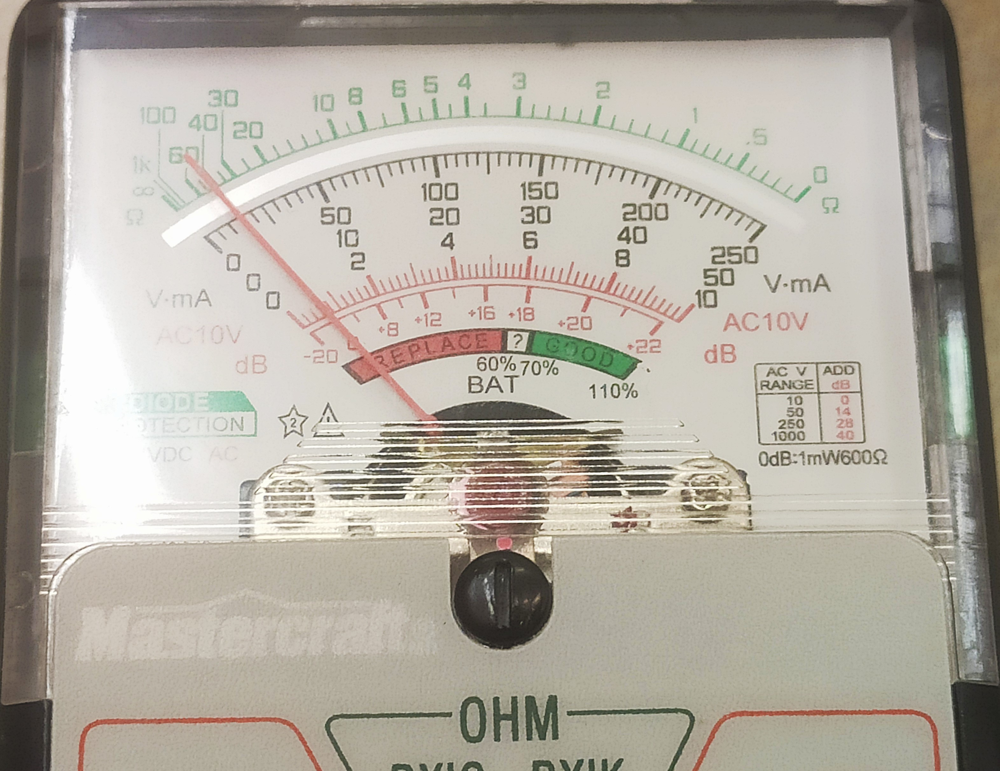
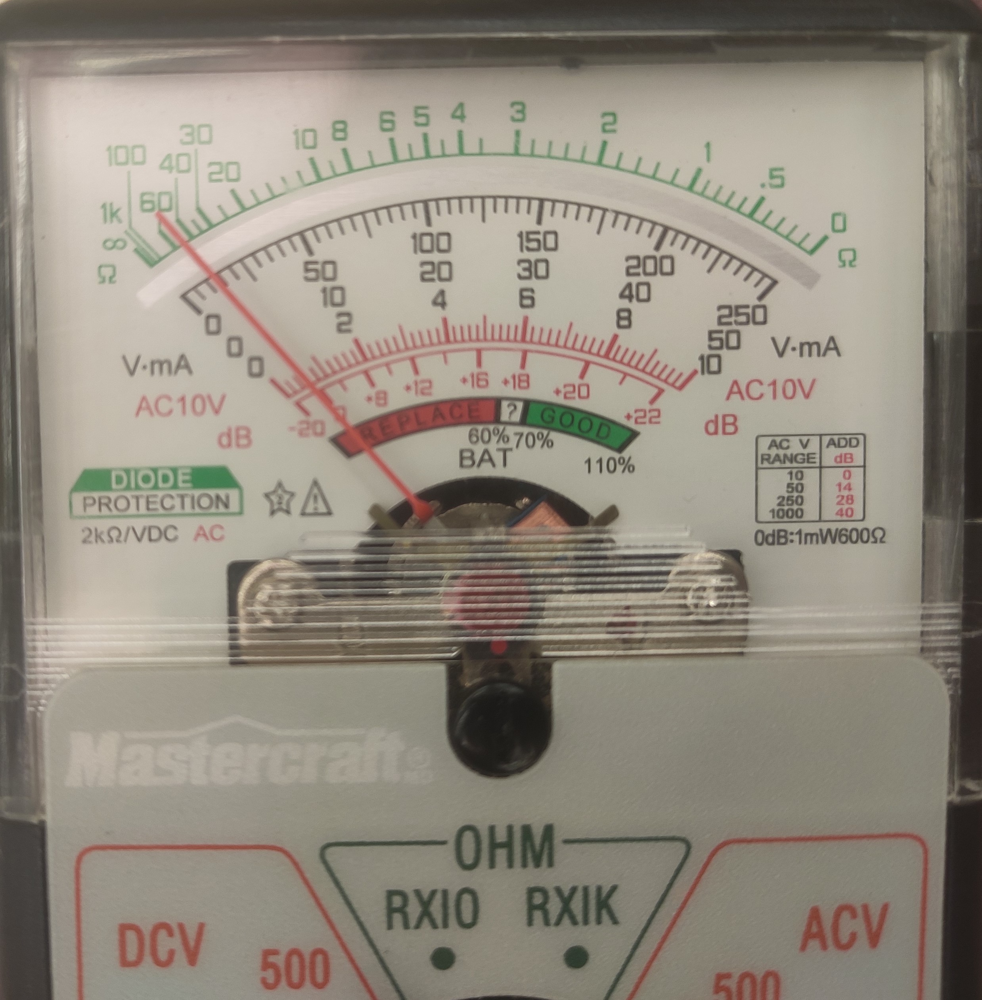

Home
Designs
Physics
Chemistry
Mathematics
Testing
Gallery
About Us
Testing
Procedure For Testing The Thermoelectric Module (Thermal to Electrical Energy Transfer)
- Attach 2 aluminum bars on each side of the thermoelectric module
- Use a paperclip on each side to secure the aluminum to the module
- Put the aluminum bars in 2 different plastic containers such that one aluminum bar is in contact with one container and the aluminum which is attached on the other side of the module is in contact with the other container
- Attach wires from a digital multimeter to the wires of the thermoelectric module
- Pour cold water into one plastic container
- Add ice to the plastic container that has the cold water
- Pour boiling water into the other plastic container
- Wait 12 seconds and then the LED should light up
Displaying Data

Maximum Voltage (15V On A 1.5V Scale)

Second Highest Voltage (12.5V on A 1.5V Scale)

Outcomes (Results)
- On a 1.5V scale, when we tested the strength of a 1.5 volt battery, the digital multimeter read 225V.
- However, when we tested our heat transfer, the maximum voltage that we could generate was 15V, which indicates that it was 7% efficient.
- Our average voltage was around 10.4V so it was about 5% efficient.
Error Analysis
First of all, we used brass instead of aluminum. Brass is not conductive enough compared to aluminum. Brass is 28% conductive while aluminum is 61% conductive. Secondly, the Joule thief circuit doesn’t serve its purpose due to substantial amounts of glue. Due to the large amounts of glue, the joule thief circuit could not effectively run current through.Our LED only lights up consistently when we’re using a 9V battery, which shouldn’t be the case. 1 of our joule thief circuits was able to light up for around 5 seconds with a 1.5V battery. Finally, the warmest water and the coldest water that we had access to could not create a large enough temperature difference. This was because we couldn’t test as soon as we got boiling water because we also needed to get other materials such as cold water and ice. Therefore, the boiling water did cool down.